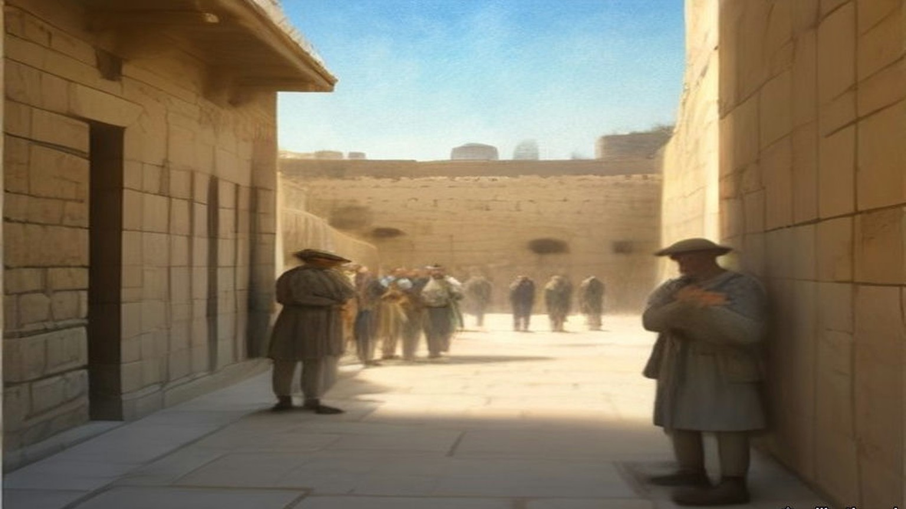
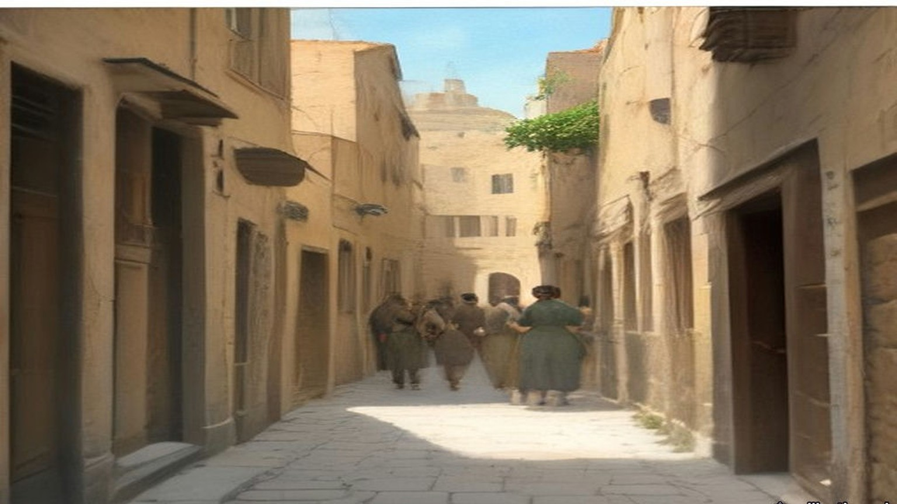
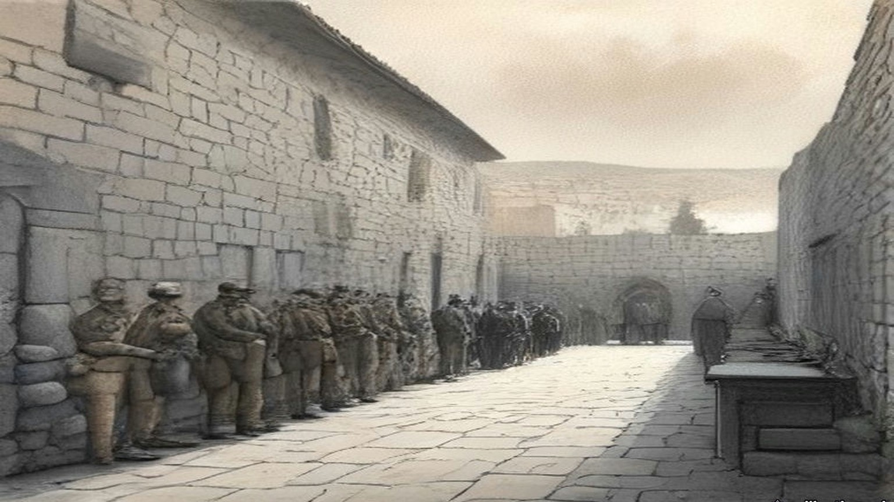
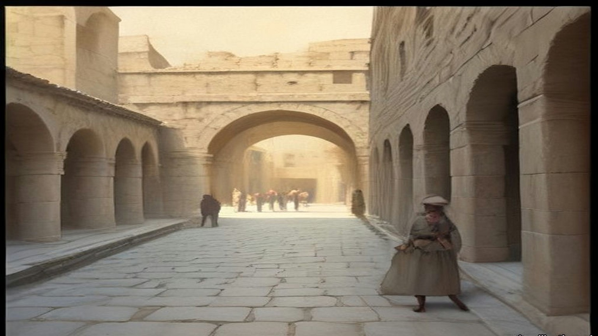
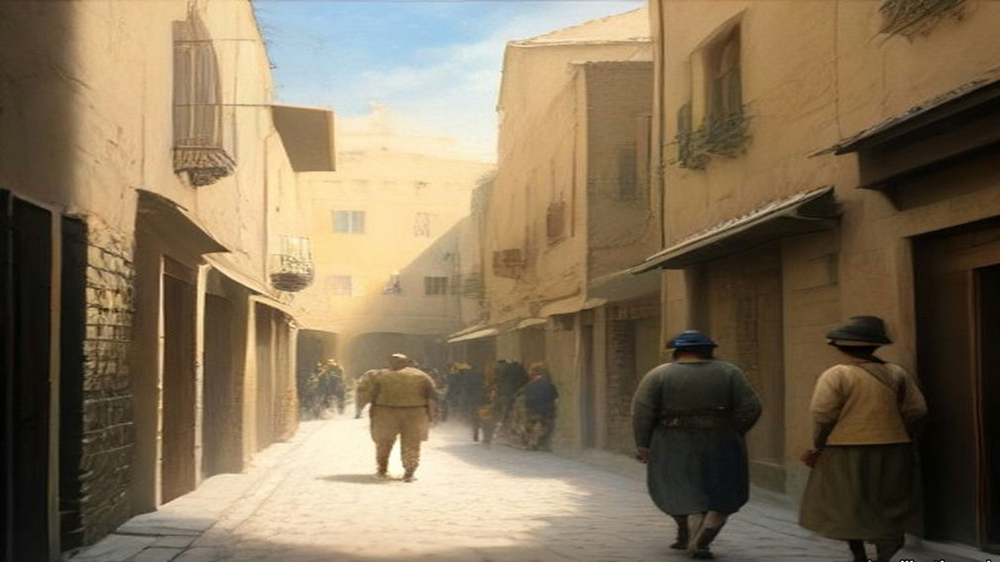
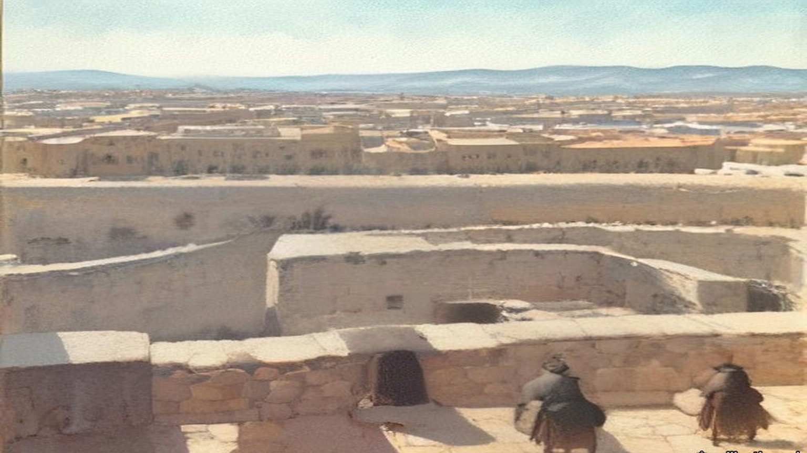
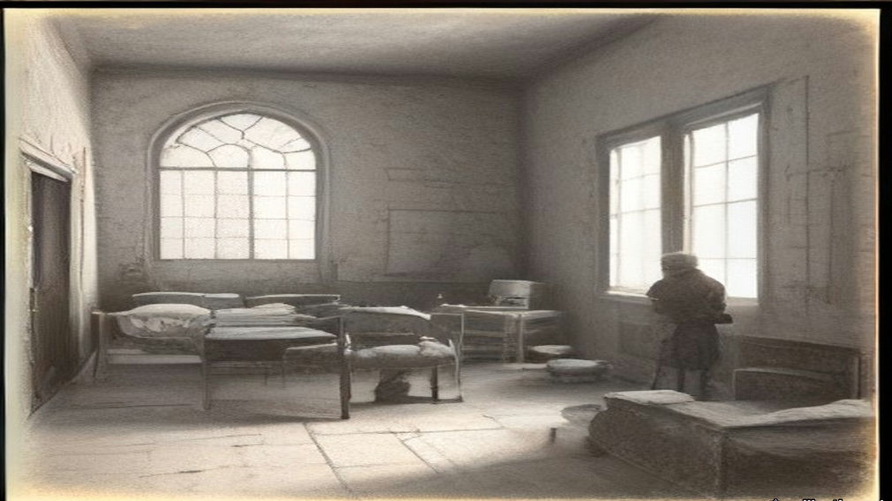

Chapter 25
Screen at the Wailing Wall, 1922–1938
Haifa, Jerusalem, the hills of Carmel, Acre and Westminster, April 1922 to October 1938
The jetty near Haifa Railway Yards, end of April 1922
They came ashore on a Sunday morning at the end of April 1922, 650 British gendarmes, onto a dusty little jetty near the railway yards at Haifa. Douglas V. Duff was one of the youngest of them. He was not quite twenty-one. He would write later that the Gendarmerie were the first Westerners embodied for service in Palestine and nowhere else to land since Acre fell in 1291, and he liked the thought of the Knights Templar slipping away from Castle Pilgrim in the dark a few weeks after. He wrote that at the end of a long life of soldiering for pay, and the Templars stayed with him the whole way.
He had already been a cadet in the school-ship Conway, and before he was sixteen he was the sole survivor of the Thracia, torpedoed in the Bay of Biscay in March 1917. He spent twenty-six hours on the bottom half of the starboard lifeboat, blown out of its davit-falls, and made a compact there with God that if he lived he would serve Him in the cloister. He was sunk again in 1918. He saw South Russia. He entered the noviciate of a teaching Order in England and stayed twenty months, and on the eve of his temporary vows of Poverty, Chastity and Obedience found he could go no further. He left on a Monday with a railway ticket to London and three-and-sixpence in his pocket. On the Friday of that same week he was in a Royal Irish Constabulary patrol ambushed in Grafton Street, Dublin. A bomb was thrown at the motor-tender. Two men were hurt.
Most of his Irish service was in Galway City, with fights in the bogs and on the mountain-sides of Connemara. When the R.I.C. was disbanded he was given a pension as a "regular," and he still found it useful at Christmas thirty years on. Before he left Ireland he put his name on the list for the new Force. He had decided, he said, "sanely and coolly, that the only trade open to me was that of the Free Companion, of the mercenary soldier who is ready to fight for any side not engaged in warfare against his own country, so long as he is well paid."
The first-year men were well paid. The Colonial Office afterwards signed on a batch of discharged short-service ex-Guardsmen "at a cut rate, three shillings a day less than they paid us." Duff called them the "seven shillings a day" men. The first-year gendarme drew ten.
From the jetty the companies went south to the camp at Sarafand in thick serge, in a Palestine spring. They carried Smith and Wesson .45 revolvers in what Duff called absurd cowboy holsters and wore Stetson hats.
* * *
The marshalling yard at Haifa, 1922
Duff's platoon was moved north again by rail, its gear loaded into a dozen steel box-wagons, with an escort of four for the baggage. There was Taffy, there was Jock, there was Duff, and there was a gendarme from the American South whom they called Kentucky, a man Duff described as hewn in the rough from a block of rather coarse-grained teak. They rigged four folding iron beds in an empty wagon, uncoupled it from another train and coupled it quietly onto their own, and played poker up the Plain of Sharon. It took three days and four nights to cover fifty miles to Haifa. By the end Kentucky owned their money, and the mosquitoes had bitten them so hard that he moaned they would all have malaria before the week was out.
At Haifa they halted in the marshalling yard by the level-crossing on the Acre road. A high wall ten feet away blocked all view. A short reconnaissance towards the station turned up a dozen bottles of German beer at a small Arab café blazing under hissing paraffin arc-lamps. They kept watches through the night. At half past one Kentucky climbed into the wagon to wake Taffy for his turn, and Taffy found his boots gone. So were everyone's, all but the American's. Their other kit was sealed in the locked cars. A famous and much-publicised Gendarmerie robbed of its boots by a sneak-thief was more than any of them could face.
Kentucky went out to look and came back within minutes. The town brothels lay a few yards beyond the wall. Taffy stayed with the baggage. Duff and Jock went in their socks, with Kentucky in front looking for broken glass in the sand and cinders. The brothels were sagging lean-tos against the walls of a compound on the lower slopes of Carmel, with paraffin lamps glowing amber in a few of them and a reek, Duff wrote, of cheap cosmetics, sewage and oily garlic.
They knocked at the matchboard door of the only stone house. "A large, very fat, one-eyed woman" heaved herself up from a creaking brass double bed. She began to curse, then saw three uniforms and stopped. "In fairly good English she asked us if we wanted one of her girls." Jock told her to sit down and listen. She did.
The three of them stood there, revolvers on their hips, Stetsons on their heads. Duff never forgot what she asked next. "She asked, tremblingly, if we belonged to the new Police which she had heard had been sent to Palestine because of the murders we had committed in some land from which the English had been driven because of our brutalities." Kentucky told her that they were, and that they were ready for even more awful tyrannies if she did not find their boots. Duff added that the local police would be no use to her, since this was a superior kind of police. She remembered the Turkish Gendarmerie, he thought, and took the point.
There was shouting, and a blow to one of the younger women, and three pairs of ammunition boots came back. The thief had taken them straight to the bedside of the woman he was visiting and offered them as her fee. "We sweetened the deal by giving the lady five piastres." She brought out a bottle of arak. They declined her other offer and walked back over the cinders shod.

* * *
Jerusalem, 1923 to 1928
The Gendarmerie did not last. Newspapers in Britain demanded retrenchment, and Plumer's administration cut the armed forces first. In 1926 the Gendarmerie, British and Palestinian, was abolished, and 5 officers and 212 other ranks of its British Section went over to the civil police. The Royal Commission of 1937 counted the whole Palestine Police that year at 125 officers and 1,627 other ranks. Of all ranks, 245 were British. Duff stayed and rose. By 1928 he was an officer in Jerusalem, based at the Citadel, carrying a .450 Colt in a belt-holster and an old Irish blackthorn shillelagh.
He also carried a whip. He called it his kurlaj, a Turkish hide whip, and elsewhere by its Arabic name, the kurbaj. He used it on a gang leader behind the Armenian Patriarchate stables, giving the man "the best thrashing he had ever had." After the earthquake of 11 July 1927 brought the new tourist hotel at Jericho down on its guests, he used it on the Jericho men and Bedouin who would not dig until a retired Indian judge had paid them every sovereign in his satchel, and who scrambled for the coins with daggers out when he threw some on the rubble. He had his sergeant trice one Bedouin to the wire of the hotel tennis court and lay on a dozen lashes. He set these down without apology.
In the Wadi Haramiyeh, on the Jerusalem to Nablus road near the twenty-ninth kilometre stone, three highwaymen in hill-country clothes put a stone barrier across the road and stopped several cars. Among the travellers was Dr. MacInnes, the Anglican Bishop in Jerusalem, who faced them down. When they fled, the Bishop's chauffeur lay dead and an American woman, Mrs. Pettit, had been shot through the throat. The police went into the hill villages.

Duff wrote about what followed in plain words, and they are his.
"I, personally, saw a deal of the beating and 'third degree' that was endured by many dozens of people in the hill villages near the scene of the crime, and I am not holding up my hands in shocked protest, for I witnessed hundreds of bastinadoings during my years in the Palestine police and many scores of cases where the 'Hoist', or the 'water-can', was employed."
The water-can left nothing for a doctor to find. The man was held down flat on his back. A thin-spouted coffee-pot poured a trickle of water up his nose. His head was clamped between cushions, so there were no bruises. "Usually, we British officers remained discreetly in the background, not wishing to have the skirts of our garments soiled, but we were ready to benefit by information wrung by our subordinates from the wretched suspects or criminals."
Three men from the hill-top village above the scene were tried and sentenced to death. Most of the British police officers, Duff wrote, believed them innocent, because no Arab robber he knew worked so close to his own village, with the collective fines that followed. The three were hanged in Jerusalem Central Prison. A week later some of the loot from the hold-up was found on known ruffians of Abu Dis, miles away.
* * *
The window of the Mahkama Sharʿiyya, the afternoon and evening of 23 September 1928
On the eve of Yom Kippur Duff met the District Commissioner near the Holy Sepulchre. The Commissioner was going down to the Temple area to call on some of the religious sheikhs and asked him along. They walked down David Street from the Jaffa Gate, across the filled-in valley, towards the Gate of the Chain. Just to the right of the gate stood the Mahkama Sharʿiyya, the Muslim religious court, where dowries, wills, endowments and divorces were heard. Several elderly sheikhs met them there in black cassock-like robes, red fezzes wound with white turbans.
From a tall window of the court the Commissioner looked down on the pavement before the Wall a few yards below. It was full of worshippers coming and going. Duff gave the hour as about four in the afternoon. The fast began at sunset.
Duff had been past the Wall earlier that day and had noticed a screen about a third of the way along the flagstones, an ordinary bedroom screen of light wooden battens and thin cloth panels that folded in four. He had thought nothing of it. The Commissioner saw it now and said he had never seen such a thing at a festival at the Wall before.
Duff was sure the sheikhs had paid it no attention until that moment. They spoke all at once. It was a barefaced Jewish attempt on the Mosque of al-Aqsa and the Dome of the Rock, they said, the thin end of a wedge. The Wall was where the Prophet's steed al-Buraq had stood before the Night Journey. If the Commissioner did nothing, a holy war would be on his head alone, and he would be a false servant to the King of England. And look, they said. Were the women not on one side of the screen and the men on the other, as in a synagogue? Was it not the custom for Jews at the Wall to stand where they chose? Duff looked down. The women were on one side and the men on the other.

The Commissioner kept calm, made a joke, and said he would go down himself and speak to the beadle of the Wall, whom Duff calls Rabbi Noah. The beadle said the screen meant nothing; it was there to give the women a little privacy. The Commissioner let it stand until the end of the service, on condition that it was then taken quietly away, and explained that the Muslims had objected. Rabbi Noah promised. Duff and the Commissioner walked on to the Hurvah Synagogue in the Jewish quarter to pay a courtesy call on the festival eve.
After about an hour of the service Duff grew restless, whispered that he wanted to check the screen, and went back down. It was still standing. Rabbi Noah told him, in tears, that it was already sunset of the holiest day, that no Jew would touch it now because that would be servile work, and that he would find a couple of Christian workmen during the evening to move it.
Duff went to find the Commissioner at the Hurvah and found him gone, back to the Residency, a Greek Patriarchate building inside the walls between the Jaffa and New Gates. There were guests. The Commissioner gave Duff a whisky-and-soda and told him to make sure, without offending the Jews too much, that the screen was gone by morning.
Duff had been taught as a young gendarme by a major who left the civil authorities no way out when a Court of Inquiry sat. He took out his notebook and wrote an order to himself, setting down the Commissioner's instruction to remove the screen by morning and calling it urgent. Then he got near his host again and held out the notebook and a pencil. The Commissioner glanced at it and signed. Duff took it down the corridor to the old Greek Christian who was chief clerk and had him press the official stamp on it.
That is Duff's account, written a quarter of a century later. The Palestine Government's communiqué of 26 September 1928, printed by the Colonial Office that November, tells it this way. On the evening of the 23rd the Mutawali of the Abu Madian Waqf, in which the pavement was vested, complained to the Deputy District Commissioner "that a dividing screen had been affixed to the pavement adjoining the Wall, and that other innovations had been made in the established practice, such as the introduction of additional petrol lamps, a number of mats, and a tabernacle or ark much larger than was customary." The Deputy District Commissioner visited the Wall during the evening service and decided that the screen had to go before the next day's service. The beadle undertook to remove it and was given until early morning. The British police officer on duty was told that if the beadle did not keep his word, the screen was to be removed.
Duff's officer is the District Commissioner and his hour is four in the afternoon. The communiqué's officer is the Deputy District Commissioner, and its complaint comes from the Mutawali in the evening.
* * *
Behind the screen, the morning of 24 September 1928
Through all of that night she did not sit. On her feet she stood in the women's part, the white kerchief of the festival bound over her hair, the stones of the Wall still cold from the dark. Her mouth was dry from the fast. Twice in the night came the young English officer with the cap, and spoke with the shammash, the beadle, and went away.
כָּל נִדְרֵי, Kol Nidre, they had sung at evening, all the vows. Now was morning. Good, the morning: from the women's side of the screen she could not see the men and the men could not see her, and so it was fitting, so it was in every synagogue of Israel. A screen of cloth only. Four leaves it had. Ribbono shel olam, רִבּוֹנוֹ שֶׁל עוֹלָם, Master of the world, for a screen of cloth what would they do?
Came an Arab officer with a few policemen, not long before nine. Went up the women against him. She felt it in the backs of her knees before she saw it, the press of the bodies moving, and the screaming, and then he was going back the way he had come, his tunic torn.
Duff was at his desk when the Arab inspector came in. At half past six that morning, over breakfast, he had been handed a note from the District Commissioner, brought by the beadle himself: the beadle had found no non-Jewish labour, and the Commissioner gave him until nine. Rabbi Noah kept the note to show any policeman at the Wall. At ten to nine Duff sent the inspector down with a few men to see the screen was gone. A quarter of an hour later the inspector was back "with his tunic in shreds, his face scratched," and the start of two black eyes. A crowd of Jews, mostly women, had gone at his party. The screen was still up, and now it was fixed to the flagstones with iron strappings. And Arabs were gathering in the bazaars.
His two seniors were out of barracks. Duff telephoned Mount Scopus for ten British constables in battle order, put on his steel helmet and walked down to the Jaffa Gate to meet them. Four of the ten were old first-year ex-British gendarmes, and he was glad to see them. They had insisted on coming, they told him later, because there was sure to be action if Duff had sent for them. They went down David Street at the double. Arabs were pouring towards the Gate of the Chain with daggers in their belts and nabbut clubs in their hands.
Then came the English. Ten of them, more, in the round steel hats, and the officer in front. She saw them come round the corner into the narrow place and the women went quiet, all of them, for a moment only. Over the Wall, from the other side, from the Arabs, she heard men roaring. Duff heard a single voice above the rest and gave it in English: "Kill the Jewish dogs! Islam is endangered. Strike!"
He took hold of Rabbi Noah and asked him why the screen was still there. The old man could not answer. He sagged in Duff's hands.
"Tear it down, Sergeant!"
They pushed in close together through the women. Umbrellas and sticks came down on their helmets. One old woman beat at Duff's back until her parasol broke. Fingers raked at them. Duff reached the screen first. A man in a long caftan and a fur-trimmed hat with a wide brim took hold of it and shouted in English that he would die where he stood and they would have to take him with it.
Hers was not an umbrella. Hers were her two hands, and she struck the wool of a back that was broad as a door, and it did not turn. Gevalt. They lifted the screen, and the man in the shtreimel on it hanging, and carried it out from among the women, all of it, the man also, and the screaming going after them up the lane.
Duff's party carried the wreckage of the screen out in their midst, the man still clinging to it. Where the lane to the Dung Gate opened onto the cactus slope of the valley, Duff halted his men and turned them about, and ordered the sergeant to throw the shreds of the screen into the valley, "and when the Rabbi refused to loosen his grip, he went down the twenty-foot-steep slope with it." The constables took a position in a deep archway where they could be attacked only from the front. The women saw they could not get at them, and ran uphill towards David Street. Duff took his men out among them in tight order, afraid of what would happen when the women met the Arab crowd in the main street, and put three constables at the junction of the covered bazaars to hold the Arabs off and block the way into the Jewish quarter.

"I still maintain that that day we prevented a general massacre of Jews in those cobbled, sun-drenched narrow streets," Duff wrote. "Not a single Jew was seriously injured; even the Rabbi, who had clung to the screen, sustained only a few abrasions and bruises." A few Arabs who went for the fleeing Jews had their heads cracked with rifle-butts.
The Colonial Office's own words, two months later, were that the removal "was in fact effected without casualties of any but a light nature." The communiqué gave the morning in four sentences. The officer found the screen still there and asked the congregation to take it away; "they replied that they were unable to move it because of the holiness of the day. The Police therefore removed the screen themselves." Worshippers who knew nothing of the night before saw only police removing the screen that divided the men from the women, "and some of them endeavoured by force to prevent the screen being taken away."
* * *
Jerusalem, autumn 1928
The Inspector-General came first, at the head of a posse, angry until he heard Duff's report. Then came a senior man from the Legal department who accused Duff of the most brutal methods against the worshippers and asked how many the police had killed. Duff told him to go and look for any dead or wounded he could find, and if he found none, to come back and apologise. Back in barracks his own senior officer and the Inspector-General said he had acted rashly and should have gone to higher authority. He told them he had taken no initiative at all, and produced the notebook with the Commissioner's signature under the order. That ended it, for him. Some senior officials suggested his transfer to another Colonial police force, on promotion. He refused to be kicked upstairs.
The Arabs cheered him in the streets of the Muslim quarters as the saviour of the shrines. Jews booed him where they were numerous enough. He went to break up a large Jewish demonstration at Mustashfa, then the outer suburb on the Jaffa road. The crowd stopped his two tenders and drove his party into the police outpost. Stones came in, and a shot or two. The tyres were cut and the telephone wires, and one tender was turned on its side. The District Superintendent fought his way through to the door with a dozen troopers. Outside the crowd chanted "Death to Duff" and "Turn Duff out and we will drink his blood."
The Superintendent ordered him to stay out of sight. Duff pulled back the steel bar and stood in the door. The front rank fell back when they saw his face. He shouted at them to come and do it, and "before five seconds had passed my sanity slipped. Once again I experienced that strange and utterly sublime ecstasy of 'going berserk', as my barbarian forefathers had done." He went into them with the hide whip swinging and his boots kicking, and in half a minute the road was empty. The Superintendent led a counter-charge behind him. Within half an hour Duff was back in his quarters under open arrest for insolence and mutiny. The charges were dropped when he apologised.
Then, by his account, three attempts on his life. After midnight, on his rounds near the half-built Nathan Straus building in the New City, a young man asked him for a light and then jumped back, and Duff jumped back too, and a block of stone he put at five or six hundredweight came down from the coping where he had been standing. He wrote that twenty-two years later, in London, he spent a convivial evening with the man who dropped it. A week later in Meah Shearim pistol bullets came at him up an alley. He fired back into the dark, reloaded, fired again, and wrote that he found "two young men lying dead and another one with a severe wound in the lungs." He ran for a patrol. Ten minutes later there was blood on the stones and no one at all. About ten days after that, on St. Paul's Road, a car came at him twice. He put two bullets through the windscreen and four more into the bodywork as it drove off. Next day every garage in Palestine was searched for a car with a shattered windscreen. There was none.
Duff's three attempts and his two dead men rest on Duff alone. He wrote that afterwards the Hebrew and Yiddish newspapers turned on the District Commissioner instead, and that he was grateful.
The leaders on both sides had already understood what the screen could become. The Zionist Organisation protested to the League of Nations against its removal, repudiating any wish "to menace the inviolability of the Moslem Holy Place." The Vaʿad Leumi, the Jewish National Council, wrote an open letter to the Muslims of Palestine declaring "emphatically and sincerely that no Jew has ever thought of encroaching upon the rights of Moslems over their own Holy Places." Hajj Amin al-Husseini, Mufti of Jerusalem and President of the Supreme Moslem Council, told the officer acting for the absent High Commissioner of the Muslim belief "that the Jews' aim is to take possession of the Mosque of Al-Aqsa gradually." On 1 November a General Moslem Conference met under the Mufti and resolved to found a Society for the Protection of the Moslem Holy Places.
* * *
The House of Commons, 12 and 26 November 1928
Mr. Fenby asked the Colonial Secretary whether he was aware that on 24 September, "being the Jewish Day of Atonement, British police, acting on the instructions of the deputy district commissioner for Jerusalem, broke through the Jewish worshippers at the Kotel Maaravi, generally known as the Wailing Wall, and forcibly removed a portable screen which had been placed there on the previous evening." Sir Frank Sanderson, the Member for Darwen, asked the question the other way round, whether the Government would protect the Wall "from acts of aggression."
Leopold Amery answered both. A White Paper was coming. The concern of the two Governments was "to maintain the satus quo as between Jews and Moslems in strict accordance with Article 13 of the Mandate," as Hansard printed it. "At the same time His Majesty's Government deeply deplore the shock which was caused to large numbers of worshippers on a day so holy to Jews." To Darwen: "The hon. Member for Darwen is, I think unnecessarily apprehensive on behalf of the Moslems." It was not contested that those in charge of the service, "acting in defiance of Government instructions, introduced certain innovations." And he gave an absolute assurance that the Jews raised no question of the ownership of the Wall.
Lieutenant-Commander Kenworthy had opened the exchange with a different complaint. The Muslims, he said, were building masonry on top of the Wall, while the authorities forced Jews to take down temporary screens. Now he asked whether the White Paper would report "the alleged brutality that took place among the worshippers." Amery: "I think that the hon. and gallant Member will find that the White Paper gives a very full account." Sanderson asked if there had been rioting in Jerusalem. "No, Sir; there has been no rioting in Jerusalem." Had the Government evidence of widespread feeling among the Muslims? "Yes, there is considerable excitement among all sections of the population."
The White Paper, Cmd. 3229, said that the Wall was "legally the absolute property of the Moslem community," and the pavement Waqf property, and that the Jews had "an undoubted right of access" to it for their devotions. It said that the beadle "has been dealt with by the Jewish authorities." It said that no Jewish police officer was at the Wall that morning, "owing to all Jewish officers in Jerusalem having been excused duty for the Day of Atonement," at the request of the Chief Rabbinate, and that the police who did the work "did not include any Jews." It ended the communiqué on one sentence: "In conclusion, Government consider that the removal of the screen was necessary, but regret all the circumstances attending that removal." It did not name the officer.
Two weeks later Kenworthy was back with a hospice beside the Wall and a muezzin on a nearby roof calling the prayer five times on Saturdays over the corner where the Ark of the Scrolls stood. "No, Sir, I am not aware of any such incidents." Colonel Wedgwood asked whether Amery was satisfied with the Governor, and whether the inquiry was into the police or into a superior officer. "I have full confidence in the Acting High Commissioner."

* * *
Palestine, August 1929, and the bill
By the early summer of 1929, Duff wrote, the money had run so thin that "In all the Holy Land of 1929 the Government had only about 30 British police officers and 120-odd constables in the British Section." Some 1,800 Palestinians, nearly all Muslim, made up the rest. There was no British soldier in garrison between Dan and Aqaba; the single R.A.F. squadron was across the Jordan guarding the desert. In summer, with home leave, not more than ninety British police of all ranks were in the country.
His own command of the Jerusalem division ended at the festival of Simon the Just at the tomb in the upper Kidron valley, when a fight between Muslim and Jewish children drew in their mothers and then the men. Duff led a charge of mounted police that killed one rioter. Jews talked of suing him for manslaughter. He announced that he would resign, and then stayed, and was sent to command a penal settlement building a road across the Plain of Esdraelon to Jenin.
On 15 August 1929 Jews marched in procession to the Wall. On the 16th the Arabs did the same. From the 23rd to the 29th Jews were attacked across the country. At Hebron, the Royal Commission recorded, "over 60 Jews were killed, including women and children, and more than 50 injured," and "Only the courage of the one British police officer in the town prevented the outbreak from developing into a general massacre." At Safad 45 Jews were killed or wounded. When troops brought up from Egypt had restored order, "it was reckoned that 133 Jews had been killed and 339 wounded. Of the Arabs, as far as could be ascertained, 116 had been killed and 232 wounded. As in 1921, the majority of Arab casualties were inflicted by the troops or police." Twenty-seven death sentences for murder were confirmed, one of them on a Jew. Three Arabs were hanged.
The Collective Punishments Ordinance of 1926 was applied to the towns and villages whose people had joined attacks on Jews, and fines of £17,840 were laid on them. Nearly 1,300 people were brought to trial. In 1930 the Palestine Government paid £101,135 for damage done in the riots, and its spending on internal security that year reached £918,741. The Shaw Commission found that the policy of cutting the garrison had gone too far, and that "The conduct of the British Police deserved the highest commendation." By 1930 the force stood at 152 officers and 2,568 other ranks, 631 of them in the British Police. Spending on public security, which had been £265,000 in 1923, was £774,000 in 1931.
Duff moved to Tulkarm. He held it, he wrote, with one Palestinian officer, a corporal, four British mounted constables and eighteen Palestinian troopers. When an Arab sergeant of his was "severe with certain associates of the brigands" to make them talk, and the brigands were run down in a fight that lasted until sunset one wet January day, Duff refused to discipline the sergeant, told the new Inspector-General what he thought of his methods, and repeated it to the new High Commissioner, Sir Arthur Wauchope. He left Palestine, sick with malaria, to marry a Scots nurse named Janet.
* * *
The hills of Carmel and Acre, 1937 and 1938
He came back with a pen. In 1938 Blackie published his Palestine Unveiled, told as the journey of a West Dorset farmer and his wife Janet on a holiday they could at last afford in 1937. Duff had married a Janet and was by then a West Dorset farmer himself. He dedicated the book to Sarah Aaronsohn.
His farmer went with a patrol and its police dogs after the men who had ambushed a car and shot an officer and two women. The trail went up into the hills near Haifa and stopped close to the village of Ijzim. The police officer gave the orders aloud: surround the place, challenge anyone leaving, "and shoot to kill if they refuse to halt." A man ran from the houses for the scrub. A dozen voices yelled at him to halt, British and Arab police together. Two or three rifles fired. He fell, got up, ran, and was shot again, and lay still. A constable turned him over and searched him and found no gun and no dagger, only two empty brass cartridge-cases. "'Ere y'are, sir," the constable said, "hexpended cartridges."
The dogs led to two houses. Their owners were not at home. More troops and police came out from Haifa, and then a party of Royal Engineers, and the two houses went up. The whole village was fined, and when the villagers could not pay, their flocks and herds were seized and driven off to be sold.
The farmer asked a senior police officer what good it did. "Arabs only understand brute force," the officer said. "We've tried being decent to 'em, and they took our goodness for weakness, now they are being taught a lesson." The farmer said there was no proof the village had anything to do with the ambush. "Good Lord, man," the officer said, "didn't the dogs lead us here?"

At Acre prison a British inspector showed him round, through the workshops where convicts made carpets from wool unravelled from worn-out army socks, and then to the gallows. The condemned cells were two cages in the vestibule of the execution chamber. When two men were to hang on one morning, the second waited in his cage and heard the first. The inspector said there had been three executions on one morning, the morning the three men of 1929 were hanged. British officers in Palestine acted as executioners themselves, he said, and he would give anything to be really sick on an execution morning. "I suppose that you served in the Royal Irish Constabulary, didn't you?" the farmer asked. "Most of the officers of the Palestine Police seem to have done so."
"I did," the inspector said, "and it was a far better and safer job than this one."
The farmer said that some of the men hanged in Ireland in 1920 and 1921 had been condemned as criminals too, Kevin Barry and the rest. "That was different, they were white men," the inspector said.

At the end of 1936 the Palestine Police had 59 superior officers, 125 inspectors and 3,132 other ranks. Its public security budget had passed £862,000 in 1935–36. On 14 October 1938 H. G. Wood wrote in The Spectator that the position in Palestine bore "a sinister resemblance to the position in Ireland in 1920 and 1921," that the rebels were adopting "the methods of Irish gunmen," and that "The authorities in the struggle to repress disorder are indulging in reprisals reminiscent of the black-and-tans." Villagers who sheltered rebels at night, he wrote, found "their houses razed to the ground" the next day, and money was being extorted from reluctant supporters of the rebellion under threat of assassination. Nearly six weeks before, on 5 September, the High Commissioner had telegraphed the Colonial Secretary in secret: "I have been much concerned lately by occasional emergence of black-and-tan tendencies."
Duff went back to Palestine as a writer more than once, the last time before the war in 1938. In Bailing with a Teaspoon he set down the names of those he thought had understood and loved the country, and among them, a few words apart, are Moshe Shertok, Ben-Gurion and Hajj Amin al-Husseini, Mufti of Jerusalem. Of those return visits he wrote that the police had grown beyond recognition, that the prisons were jammed, and that he saw "the barbed-wire fences of shameful concentration camps where people suspected, but not convicted, of political offences rotted in confinement."
Important names
- Ben-Gurion, David (1 mentions in this chapter): Leader of the Jewish Agency and first Prime Minister of Israel.
- Duff, Douglas V. (55 mentions in this chapter): Former Black and Tan in Ireland who served as an officer in the British Gendarmerie and Palestine Police in Jerusalem.
Sources
- Duff, Douglas V. Bailing with a Teaspoon. London: John Long, 1953 (the Internet Archive record gives 1959). Ch. I (landing at Haifa, end of April 1922; Thracia; noviciate; Grafton Street; Galway; R.I.C. pension; "Free Companion"); the Haifa marshalling yard and the brothel; the "seven shillings a day" men and "three shillings a day less than they paid us"; the disbandment for retrenchment; the kurlaj/kurbaj and the blackthorn; the Wadi Haramiyeh hold-up and the "water-can"; the Wailing Wall incident, 23–24 September 1928, pp. 169–176; Mustashfa and the three attempts, pp. 176–179; 1929 numbers, Simon the Just, Tulkarm and leaving, pp. 187–210; 1938 return, pp. 210–211. Internet Archive, bailingwithateas012270mbp (OCR).
- Duff, Douglas V. Palestine Unveiled. London and Glasgow: Blackie, 1938. Foreword and ch. I (the Dorset farmer, Janet, 1937; dedication to Sarah Aaronsohn); pp. 56–61 (Ijzim); pp. 71–74 (Acre prison). Internet Archive, in.ernet.dli.2015.176210 (OCR).
- The Western or Wailing Wall in Jerusalem: Memorandum by the Secretary of State for the Colonies. Cmd. 3229. London: HMSO, November 1928. Includes the Palestine Government communiqué of 26 September 1928. Read in the bilingual transcription at monbalagan.com; the communiqué text checked against the India Office copy in the Qatar Digital Library (IOR file, f. 5r).
- House of Commons Debates, 12 November 1928, vol. 222, cc. 471–3, "Wailing Wall, Jerusalem" (Kenworthy, Fenby, Sanderson, Amery, Beckett). https://api.parliament.uk/historic-hansard/commons/1928/nov/12/wailing-wall-jerusalem
- House of Commons Debates, 26 November 1928, vol. 223, cc. 10–11, "Wailing Wall, Jerusalem" (Kenworthy, Amery, Wedgwood). https://api.parliament.uk/historic-hansard/commons/1928/nov/26/wailing-wall-jerusalem
- Palestine Royal Commission Report. Cmd. 5479. London: HMSO, July 1937. Ch. III §§46–51 (the screen; the Zionist protest, the Vaʿad Leumi letter, the Mufti, the General Moslem Conference; August 1929; casualties; death sentences); ch. VII §§8, 11–16, 22, 25 (police strength 1926, 1930, 1936; £101,135 and £918,741; £17,840 and the 1,300 tried; the Shaw Commission's findings; public security spending 1923–1935/6). Internet Archive, palestine-royal-commission-report (ProQuest scan, OCR).
- Wood, H. G. "Anarchy in Palestine." The Spectator, 14 October 1938, p. 8. https://archive.spectator.co.uk/article/14th-october-1938/9/anarchy-in-palestine
- High Commissioner for Palestine to the Secretary of State for the Colonies, secret telegram, 5 September 1938, as quoted in "The Image of 'Black and Tans' in late Mandate Palestine," Jerusalem Quarterly 40, Institute for Palestine Studies. https://www.palestine-studies.org/en/node/78336.